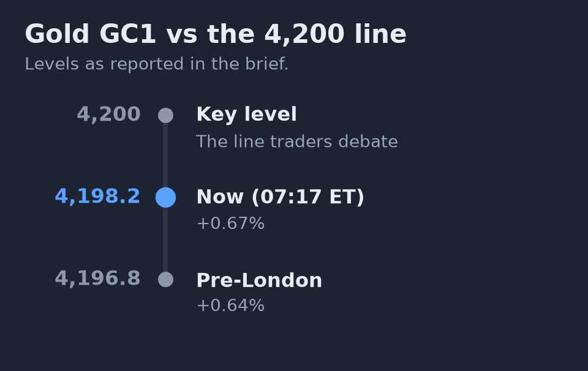
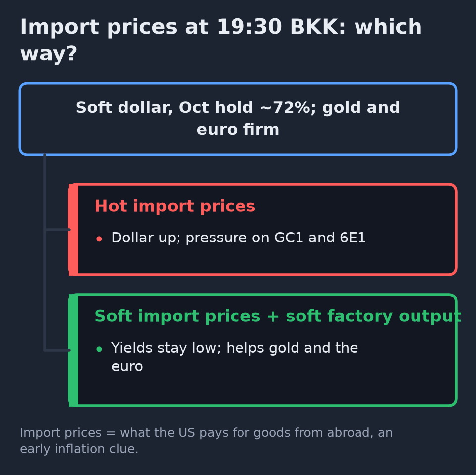
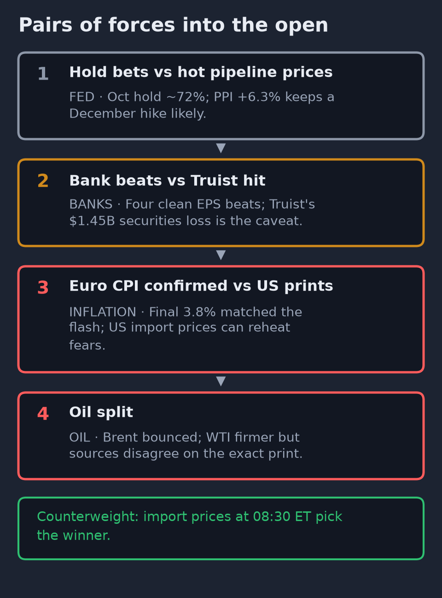
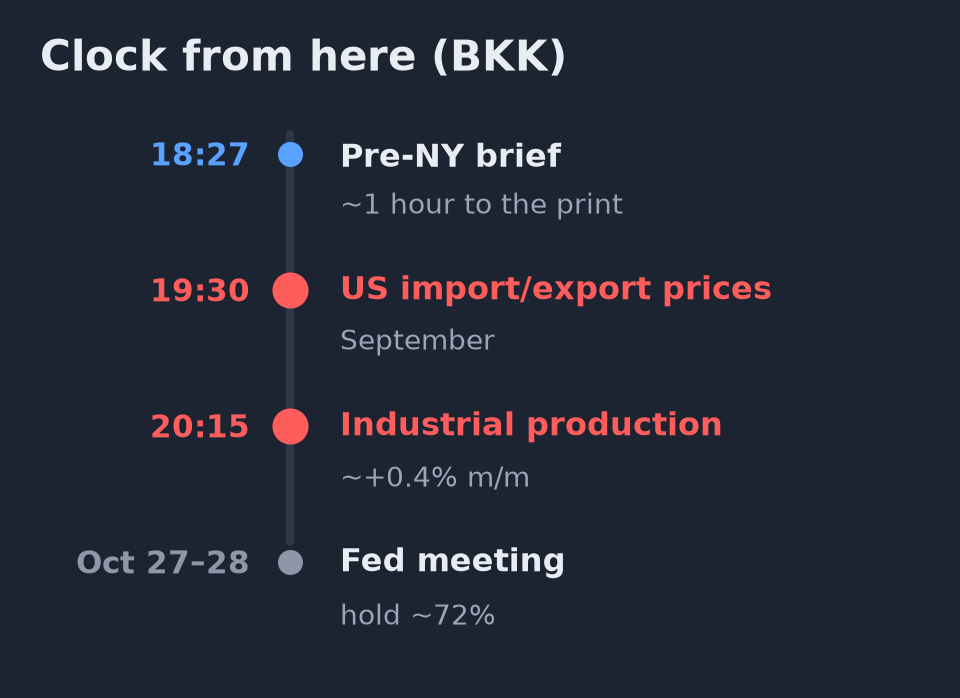
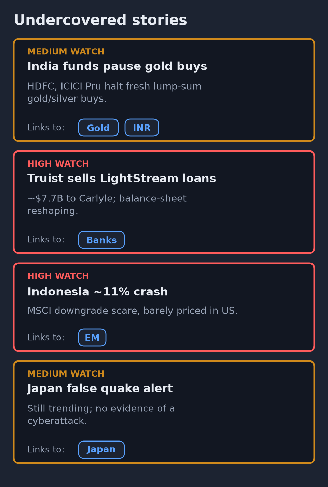
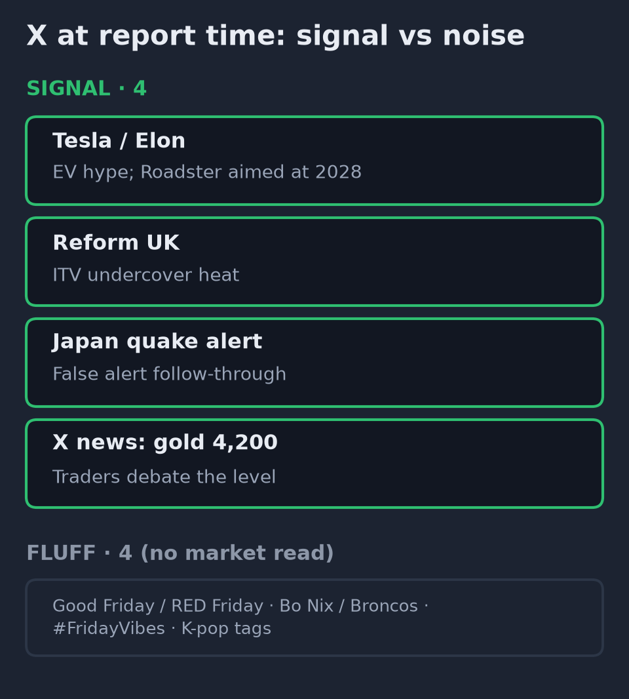
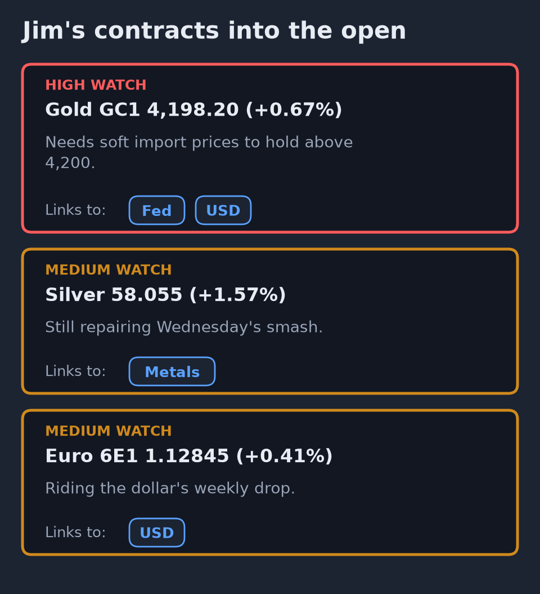
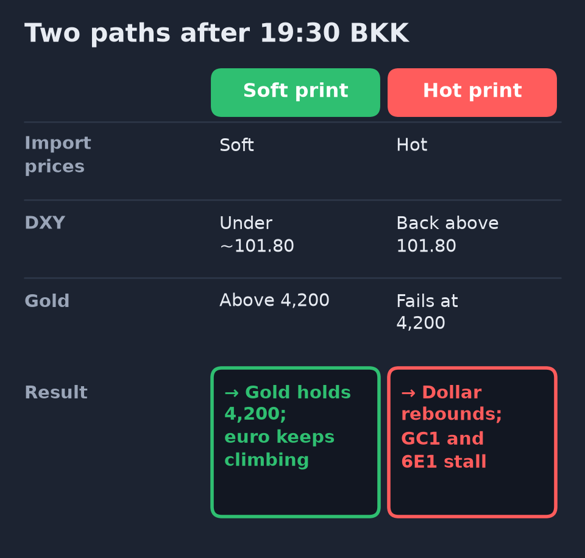

April · Market Intel, pre-NY · Fri Oct 16, 2026 · ~18:27 BKK / ~07:27 ET
Headline: the euro extended its rebound, gold held near $4,200, and Nasdaq futures slipped overnight. Bank earnings mostly beat. Import prices land in about an hour.
Eurozone inflation was confirmed at 3.8%. Soft-dollar / Fed-hold bets still dominate into the open. US import prices at 08:30 ET / 19:30 BKK are the next referee.
1) Top signals (into US open)
- Euro and gold firmed on a softer dollar. Euro (6E1) 1.12845, +0.41%, at 07:17 ET, up from 1.12565 this morning, as the dollar index (DXY) slipped to 101.68 (−0.37%). Gold (GC1) 4,198.20, +0.67%, at 07:17 ET, holding the 4,200 test. (High)
- Nasdaq futures slipped. NQ 30,118.75 (−0.08%), green at 30,193 this morning. S&P futures (ES) 7,802.50 (+0.15%), Dow futures 52,481 (+0.10%). (High)
- Banks mostly beat. M&T, Regions, Citizens and Travelers topped estimates. Truist beat on an adjusted basis but booked a $1.45B loss selling securities. (High: company releases)
- Rates and Europe calm. October Fed hold still ~72%; the 10-year yield closed Thursday at 5.089%. Eurozone inflation confirmed at 3.8%. Brent 106.27 (+0.33%). (Medium-high / High)
 Gold barely moved between briefs and sits just under 4,200. Import prices decide which side it lands on. |
2) Why it matters
The soft-dollar overnight tape favored gold and the euro, while Nasdaq paid a little for residual AI stress. Bank beats give the cash open a cleaner financials tape, but Truist’s big securities loss shows how higher yields still chew on bank books.
Mentor: when the dollar falls and hike odds stay parked for “this meeting,” metals and the euro often catch a bid first. Growth tech only joins if the next inflation print (today: import prices) stays soft.
Import prices at 08:30 ET are the gate. A hot print would lift the dollar and pressure GC1 / 6E1. Soft import prices plus soft factory output at 09:15 ET would keep yields low and help Jim’s contracts.
 A hot print would revive inflation worry and lift the dollar; soft prints keep the overnight tape intact. |
3) Chessboard
- Soft dollar / hold bets vs hot pipeline prices. Oct hold ~72%. PPI +6.3% still keeps a December hike likely.
- Bank earnings beats vs Truist GAAP hit. Four clean EPS beats. Truist’s $1.45B securities sale loss is the caveat, even with adjusted EPS up.
- Euro CPI confirmed vs US import prices next. Final 3.8% matched the flash. The US print can still reheat inflation fear.
- Oil split. Brent bounced; WTI is firmer vs the morning Investing level but sources disagree on the exact contract print.
 Each pair can flip on the 08:30 ET print, so treat the overnight calm as provisional. |
4) Leading indicators
- 08:30 ET / 19:30 BKK: US import and export prices (September). Forecasts around the prior month’s pace; a hot number adds to the inflation worry.
- 09:15 ET / 20:15 BKK: US industrial production (factory, mining and utility output). Consensus near +0.4% month on month after a flat August.
- All day: monthly options expiration. Extra Friday position squaring can exaggerate late moves.
- Oct 27–28: Fed meeting. Hold is still the base case (~72%).
- Levels to watch: GC1 4,200. 6E1 1.1300. DXY 101.50–101.80. Brent $106. 10-year 5.09%.
- Rule of thumb: soft import prices keep yields low, which helps gold and the euro. Hot prints push the dollar back up.
 Import prices land first, then factory output; options expiration can exaggerate late moves. |
5) Undercovered
- India’s big mutual funds halted fresh lump-sum buys into gold and silver schemes (HDFC, ICICI Prudential and others), citing SEBI-linked guidance to curb gold-import pressure on the rupee into the festive season. Existing SIPs and redemptions continue. It is a quiet demand damper for physical gold flows, not a US futures story by itself. (Medium: X news summary / local fund notices)
- Truist’s LightStream sale (~$7.7B unsecured loans to Carlyle) plus the AFS securities repositioning. Banks are still reshaping balance sheets under higher yields. (High: Truist release)
- Indonesia’s ~11% crash (MSCI downgrade scare) still barely priced in US futures. (High: morning Reuters)
- Japan’s false M9.9 quake alert still trending worldwide as emergency-system tags. No evidence of a cyberattack. (High on cancellation; low on hacking)
 India's fund pause is a quiet damper on physical gold demand, not a US futures story by itself. |
6) What’s trending on X (~18:27 BKK)
- US: Good Friday, Tesla, RED Friday, Bo Nix, #FridayVibes, Broncos, World Series, Porsche.
- UK: Tesla, Reform, Reece James, Kinnock, Elon, #FridayFeeling.
- Worldwide: Japanese entertainment tags, plus 緊急地震速報 (earthquake early warning) — the false-alert story still echoing.
- Signal: Tesla / Elon / Roadster (EV hype; production still aimed at 2028). Reform UK (ITV undercover heat). Japan quake-alert follow-through. X news also shows gold traders debating 4,200 and India gold-fund halts.
- Noise: Good Friday / RED Friday greetings, NFL (Bo Nix, Broncos), Fourth concert / K-pop tags.
 Tesla, Reform UK and the quake-alert tags carry the only market or policy angle. |
7) Jim’s contracts
- Gold (GC1) 4,198.20, +0.67%, 07:17 ET. Needs import prices to stay soft to hold above 4,200.
- Silver (SI) 58.055, +1.57%. Still repairing Wednesday’s smash.
- Euro (6E1) 1.12845, +0.41%. Riding the dollar’s weekly drop; final eurozone CPI was a non-event.
 All three ride the softer dollar, so a hot import print can stall them. |
Bottom line
Overnight the soft-dollar / Fed-hold tape kept working for gold and the euro, while Nasdaq faded a little. Bank earnings mostly cleared the bar. For Jim: gold is still a 4,200 story that lives or dies on the 19:30 BKK import-price print. Don’t fade the euro while DXY stays under ~101.80 — but a hot US import print can stall both. Interpretive note: it is options-expiration Friday after a whiplash week; late squaring can exaggerate moves.
Confidence: Yahoo futures (ES/NQ/GC/6E/DXY/Brent/SI) high for direction and medium-high for exact tick. Investing.com WTI used for morning-comparable oil level (Yahoo CL diverges). Earnings from company releases high. Eurostat final CPI high. FedWatch ~72% medium-high via secondary reports. X trends high; X news summaries medium.  Don't fade the euro while DXY stays under ~101.80; gold lives or dies on the import print. |
|